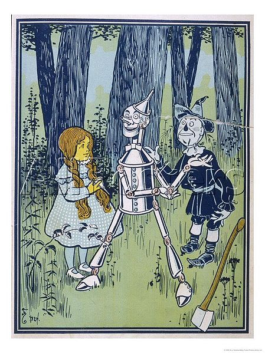

Dorothy lived in the midst of the great Kansas prairies, with Uncle Henry, who was a farmer, and Aunt Em, who was the farmer's wife. Their house was small, for the lumber to build it had to be carried by wagon many miles. There were four walls, a floor and a roof, which made one room; and this room contained a rusty looking cookstove, a cupboard for the dishes, a table, three or four chairs, and the beds. Uncle Henry and Aunt Em had a big bed in one corner, and Dorothy a little bed in another corner. There was no garret at all, and no cellar--except a small hole dug in the ground, called a cyclone cellar, where the family could go in case one of those great whirlwinds arose, mighty enough to crush any building in its path. It was reached by a trap door in the middle of the floor, from which a ladder led down into the small, dark hole.
When Dorothy stood in the doorway and looked around, she could see nothing but the great gray prairie on every side. Not a tree nor a house broke the broad sweep of flat country that reached to the edge of the sky in all directions. The sun had baked the plowed land into a gray mass, with little cracks running through it. Even the grass was not green, for the sun had burned the tops of the long blades until they were the same gray color to be seen everywhere. Once the house had been painted, but the sun blistered the paint and the rains washed it away, and now the house was as dull and gray as everything else.